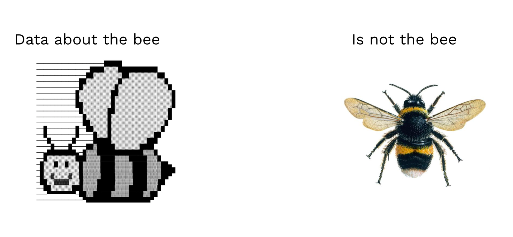

Worksheet · Find · July 2025
Searching for Data: a Data Discovery Framework
Pre-requisites:
Read the From Research Question to Data Hypothesis worksheet.
Have a look at this basic overview of advanced search operators for Google and Bing. Test them.
Goals:
Acquiring a sense of how different types of data exist online, to;
develop strategies to discover data which is relevant to your investigation
Introduction
Data is not created out of nothing and doesn't exist in a void. Every document, post, image or dataset is the product of and is always embedded in a web of relationships. When our goal is to find data, we can leverage those relationships to create a discovery framework. This guide teaches you to think about data relationally: always connected, always leaving traces, and always findable if you look the right way.
Let’s start with a silly example. Think about an animal, let’s say a bear: The features that make a bear a bear (e.g. its need for water sources, calorie-dense foods, and winter shelter) are exactly what we can use to locate one. The same “requirements” that define bear behavior become the discovery clues that reveal bear locations. To find the bear, you need to know the bear and think like a bear. Stay long enough around salmon and you’ll eventually catch a momma bear with her cubs.
We can think about data in the same way. If you need geographic data, for example, you need to understand how its most common features determine where it is likely to be found: it often consists of numbers, it is structured (quite often tabular), and it tends to live in specific file formats that require specialized software to open it and work with it (e.g. kmz, geotiff, geojson). As a result, you should be very surprised to find it on Instagram. Geographic data is more likely to be located inside a password protected section within the website of an organization dedicated to publishing it and maintaining it.
Conversely, the human experiences that make up the bulk of digital testimony of societal events are quite often audiovisual: they are images or videos with different formats, mostly posted to social media intended to engage user interaction and attention. It would be strange to find this type of data within a governmental Open Data repository, but it’s common in the plethora of platforms that we use everyday.
Thinking in this relational way can help you to determine, for example, that if the data you seek involves people in specific parts of the world (or a specific age group, think about the connection between Facebook and boomers), you’re more likely to find it in a particular place: Videos from events in Syria are more abundant on Telegram than TikTok, for example. But migrant’s portrayals of their challenging trips towards what they hope is a better life in the global north are more prevalent in TikTok and Instagram. There are technical reasons why this is the case, for example that Telegram has features that allow users to create theme-based channels with subscribers, whereas TikTok has an algorithm-based feed. But there are also cultural reasons: TikTok has grown around the idea that everyone is a content-creator with a personal story to tell (though the formats may be very varied), while Telegram is a space that emerged as an alternative to SMS messaging and later turned into a channel-based Twitter-like ecosystem.
The following paragraphs will help you to develop what we can call relational thinking about data: the ability to recognize and navigate the dense web of connections that our heavily digitized world generates through its operation. We’ll use that sensitivity to create a data discovery framework. The goal is to facilitate the process of creating a strategy that looks a bit like what you see on the table below. We assume that you already have identified what data may help in your quest.
I need testimonies depicting the aftermath of an attack in a town in West Asia
|
|
|
|
|
|
|
|
|
|
|
|
|
|
An abstract warning
Before we dive into the features that make data findable, we need to acknowledge something important: While all the digital systems (from banking networks to smart cities, to the emergent AI industrial complex) produce data as a result of their daily operation (in fact, they produce data to be able to operate), their technical architectures are not designed for our investigative ends. When you use data from social media platforms as evidence in a human rights investigation, that’s not a realization of Facebook’s societal or economic goals. This can be better characterized as a process of repurposing that implies taking advantage of how these systems are designed to produce and store gigantic amounts of data, and using them to achieve other goals. The distinction is important because the act of repurposing is not always frictionless: Many systems will actively make it hard for you to scrape, save, archive, copy or even see the data you need.
Luckily for us, all the data producing and processing technologies that power most of modern society are inherently relational: they create extensive webs of connections that we can extend far beyond their intended operational purposes. Every transaction, sensor reading, every digitized document exists within networks of technical dependencies, technological patterns and infrastructural relationships that you can leverage to find data.
For digital investigations, relational thinking implies learning to exploit these relationships as “investigative opportunities”. Thus, we can say that the goal of relational thinking is to help you create strategies to access data that may not be immediately available, but can be traced by following the broader web of databases, networks, devices, platforms and all kinds of technical systems that we interact with every day.
The Discovery Surface
We can look at data from various perspectives that give us clues we can use to craft data discovery strategies. We can focus on its production, shape, place, narrative relations, the time at which it is produced, and the ecosystem that it lives in. Each of these perspectives is the equivalent of observing an imaginary data point through different apparatuses, just as a biologist would try to observe a bear by setting up an automatic camera, registering its footsteps on a map, or looking through a set of binoculars, to get a complex understanding of its behaviour. We’ll call that the discovery surface.
To explore these dimensions and how our understanding of them can play a role in helping us find data, let’s take a specific example: Let’s say you want to start a digital investigation about the displacement of the rural population of central Mexico due to cartel violence. What data would help you to tell the story? A full investigation would probably combine many different data types: census data and other types of public sector information, reports from newspapers and grassroots/international organizations, user generated content, and perhaps even satellite images to show how towns slowly go dark at night over the years. But how would you find each of these datasets?
Step 0 is to take a step back and operate with this suspicion/assumption: considering the gigantic amount of data produced each day by all kinds of institutions, people and systems, the data that may help you answer your questions is very likely out there somewhere (though there are exceptions). Are you skeptical? Have a look at the diversity of the datasets hosted in the blog Data Is Plural, from Pizza Slices eaten by some random person to many legal cases containing AI hallucinated fake citations.
Finding data in a heavily datafied world is a matter of knowing where and how to look for it.
1. (Re)Production
Understanding how data is produced and what produces it is arguably the most important approach we'll examine, as it fundamentally shapes the other analytical tools we can use to build discovery strategies. When you get a sense of what has generated the data and the process behind its creation, you also get information about where to find it and when to look for it. This knowledge also reveals information about the data's structure and the narratives people construct with it (and how those stories are organized). To fully grasp this concept, though, we need to step back and examine it from a more theoretical perspective. Bear with me (pun intended).
I suspect you haven't seriously considered what data actually is. Can you define it? Data isn't like dough that you mold into a specific form to represent something. Unlike other resources that drive economies or fuel research, no aspect of data exists before the moment of its creation. There's no natural source from which it flows, it doesn't seep from the ground or grow on trees; isn't filtered from rocks, nor results from any animal's biological processes. Instead, data emerges from recording specific aspects of objects or phenomena to represent them in a different form (see Image 1). Some scholars argue we should call it capta (emphasizing its origin in the act of capturing) rather than data (which implies something simply "given", from the Latin datum).

Fig 1.
What we capture during data creation isn't material itself (though it may have materiality, like the tiny bumps and valleys on CDs, for instance), but rather an abstraction of one or more features from an object. Let's make this concrete. Imagine you're gathering data about a bee. You could do this manually, recording observations on paper. You might note the color and number of its stripes, the texture of its fuzzy body, and measurements like weight, length, and width. When you represent the bee through hand-captured data, you might end up with a table like this:
| Feature | Value |
|---|---|
| Stripe Colors | 2 |
| Number of Stripes | 6 |
| Body Texture | Fuzzy |
| Weight (grams) | 0.1 |
| Length (mm) | 12 |
| Width (mm) | 4 |
No matter how much time you spend documenting every aspect of the bee, your resulting dataset will never represent it completely or with absolute fidelity. While this may sound like an exaggerated claim, it's crucial to remember, especially when making decisions based on that data. Failing to account for potential misrepresentations in your dataset (for instance, if the bee actually weighs 0.092 grams rather than your recorded measurement) could significantly impact your decisions' outcomes. The world commonly assumes that data is objective and doesn't lie, but like everything that is made and not found, data inevitably bears the imprint of its creators.
When manually capturing data about the bee, several factors influence what the dataset will ultimately look like. The manual approach in our example determined the dataset would have the shape of a table. If you only had a pencil rather than a computer, you’d record on paper rather than a digital file, and so on. Even your personal perspective, interests, worldview, and preferences shape what you decide to include in your bee dataset. For an extreme but illustrative example: people who dislike hairy insects would likely spend less time documenting the fuzzy features. For another compelling (if amusing) example of how cultural perspectives affect our perception of reality, consider the infamous white/blue/gold/black dress debate. If you had to record data about that dress, would you log it as blue or white?
More sophisticated ways of capturing data do not avoid these hurdles and they come with their own set of influencing factors (such as how the engineers who created the workflow may have prioritized certain aspects of the bee-capturing mechanism over others), but that's not the goal of our discussion here. Hopefully I have managed to make the point I'm trying to make: Data is shaped by the people and systems that create it, the technologies that store it, and the dynamics of the digital spaces where it is shared (which, as you'll see below, can also be understood as a form of creation). When looking for data, your goal as a digital investigator is to try to think about what and who and how data was created, while keeping track of your biases (how the way you think may influence how and where you look).
To create a data discovery strategy through the lenses of data production, the first step for digital investigators is to carefully think about the event/thing you're investigating and imagine who is most likely to have produced data about it, which will also give you information about the production mechanisms. Let's return to the Mexican example. Suppose we want to find data about a specific incident where cartel members and government forces clashed in our region of interest. Based on what you know about how such events become digital data, ask yourself: who or what might have created this data and through what processes? If you lack the contextual knowledge to make an educated guess, try asking someone you know who may have it. You can also ask a chatbot, but consider how doing so implies introducing some unaccountability to your research. Keep a record of both the text of the prompt to the chatbot and its responses.
Back to the example: Likely candidates to have produced data relevant for us would be journalists reporting in the area, state institutions keeping records of policing activities, and everyday people recording their experience as witnesses (and sometimes participants) of events like a cartel/state clash. You may have immediately noticed that each of these options requires a different data discovery strategy: either a search engine query, an official records request, or a sweep of social media, for example. Let’s see how each actor and creative process generates different data points.
If we focus on everyday people, a video capturing the clash would likely be recorded by someone living in or passing through the town where the clash happened. Chances are high that the recording is done with a phone, which locks the data to a specific list of file-formats (see Shape, below). It will later be uploaded to social media or a messaging service (see Place), during which the video is re-produced at least once when saved to the platform’s servers (it is either converted to a different filetype from the original, or at least reduced in size and stripped from its metadata), and copied many times across the internet cloud for faster access. Videos like these will often be copied locally and reshared by other users, who may also edit them to highlight or cut something, maybe even editorializing them with voiceovers, text overlays, stickers or memes before resharing (these practices would also fit the approach described in Ecosystem below).
Each version of this file is actually a different data point, even if they all depict the same incident and were created from the same original video (which, btw, may or may not even continue existing in the original recorder’s phone). Depending on what your interest is, you may be looking for one particular version or all of them.
What about journalists? While a reporter may have been present at the exact moment of the clash, it’s more likely that they arrive a little bit later and record, with professional equipment, the aftermath. These videos would be posted to the newspaper portal or their YouTube channels and often include excerpts of User Generated Content (USG) and interviews with locals to further contextualize what happened. The resulting mix of media offers its own possibilities because it provides you with a “vetted” (by the journalists, so choose wisely) web of connections between USG and professionally produced media, to expand your visual catalogue. But it also has disadvantages: the UGC present in the report will very likely be of less quality and different duration than the original file, and may not be available if provided exclusively to the media.
Adventurous photojournalists may have witnessed first hand the incident, though, and produce photos uploaded to their newsroom website and sometimes to their own Instagram or Flickr accounts. Later the same day, or the days after, an in-depth analysis of the clash will likely be published by investigative journalists or large national/international news outlets. These more complex and well researched pieces create more data about the event, often including official statistics, interviews with public officials and perhaps even some historical revision of cartel activity in the area.
So, what is the new point I’m trying to make here? While the first hand account of witnesses can be understood as “raw” versions of the event, the journalistic account connects it with many other new data points. Sometimes these are useful, sometimes they are not, but it’s good to keep in mind that this production pipeline exists, because it may provide us with useful information, clues and investigative pathways. In terms of the relational thinking that we are interested in, the first hand account deploys less connections than the journalistic one, so if what we’re looking for is to expand our search, we gain from focusing on the latter.
Now let’s move on to institutional actors. Think about the times that you have encountered datasets produced by the state’s institutions. What do they look like and what is their focus? Official datasets usually respond to the needs of governance. They are designed to help institutions render national and international phenomena measurable, understandable and hopefully manageable. Thus, institutions gather demographic characteristics that inform resource allocation and policy targeting, economic indicators that guide fiscal and regulatory decisions, health metrics that justify public interventions, educational outcomes that legitimize institutional reforms, and security-related data that enables surveillance and risk management, for example. What is interestingly specific about the state is that its data production carries institutional weight. In many countries, this is therefore what would count as the ultimate or official account of whatever happened. The state also has access to data sources that other actors don’t and therefore their datafied versions of a phenomenon are denser with relations to other data, though not always.
Imagine that the incident you’re analysing was so big that it made its way into the intelligence agency of the Mexican government. Leveraging your extensive knowledge about how intelligence agencies make confidential reports, what do you think is a likely production process? If you don’t know, then depart from the brief explanation in the previous paragraph. A report like this will be the result of an intelligence analyst combining various data sources, some of them exclusive to intelligence institutions, some of them publicly available. This public official will receive a report from the closest information source to the event, be it the local police, the army or a stationed agent (or an undercover one!). This report will likely consist of a textual narration (with a Bottom Line Up Front or BLUF, a cool way of reporting you may want to have a look at!), photographs and maps/annotated satellite images (see also Shape, below). They will then aggregate data from other sources to contextualize the event through what is already known by the agency, for example, active cartel leaders, cell movements, relations to the local government, etc.. If the report moves across the Mexican government, other data points will be added to make it “actionable”, that is, a document that can help other public officials make a decision: it will probably include information about the impacts over the local population and its economic activity, for example. Though we tend to think about intelligence agencies as secretive institutions, reports such as this are often accessible (or requestable through FOIA, or leaked by hacktivists), so it’s not a bad idea to keep them in mind.
Now let’s move to unsuspected data producing actors. This requires a little bit of magical thinking and openness on your side, unless you’re familiar with the work of Forensic Architecture. Let’s say that the event we’re investigating was a massive clash between armed groups and the police, including fires, explosions and dozens of vehicles that remained in the area for days until the situation in the town went back to normal. The initial video may have captured the intensity of the moment via the shakiness of the recording, a stressed loud voice narrating what is happening, the sounds of bullets and the flashes of explosions. But who or what may have captured the traces of the fight left in the urban fabric and in the land? Think about bullet holes in buildings, burnt marks on the fields, debris scattered around public plazas after an explosion. If the event was intense enough, it would have left physical traces in the material world. Forensic Architecture approaches these traces as measurable data points, the materials as media that registers them, and the forces that produced them (explosions, firing, or natural events such as hurricanes and floods) as data producing actors in their own right. These traces might be visible in satellite images, Google Street View photos, or can be indirectly measured by processing media in innovative ways (trigger warning for that link: murder).
This is slightly counterintuitive and you may rightfully argue that the data producing actors are not the phenomena themselves, but the sensors that register their impact. In other words, the camera that captures the broken walls or the LiDAR scanner that produces a 3D model of the state of the town in the aftermath of the clash. The even weirder answer is that it’s actually phenomena and sensors in cooperation that produce the data, but this is a theoretical exploration that we don’t have space here to deepen. You may read this book, if you’re interested, though. What’s important is that by thinking in this counterintuitive way, you broaden the scope of your investigation, since you’re able to ask where may the event have left measurable traces or what may have captured them, without constraining yourself to the usual suspects. Digital investigations are a good field for creative practices and out-of-the-box thinking.
But before we move on to the next data discovery approach, we need to acknowledge one final complication: increased digital automation and its effect in data production and therefore our ability to find it. Much of the data we seek might not actually exist at all times or may be rendered/modified on demand when we request it from the system that produces/ stores it. In fact, there may be many steps involved in producing it, for example, calculations or transformations. The file of a photo you upload to Instagram is not necessarily the same file that your friends will download to their phones when they look at it. Digital systems are always processing data for their convenience, to make it flow faster and cheaper. One of the best examples is photo sizes on pretty much any platform. When you upload a photo to Twitter, the platform will process it and make different versions of it that can be retrieved depending on what the relevant use is: when displayed as a thumbnail on a Tweet, the platform will grab a smaller version of the file, but you can still access a higher resolution image if you tweak the filename in the address bar of your browser.
The consideration to have here is that, if the data you want is dynamically reproduced by an automated system, you need to keep in mind how that process may have affected its quality and to what extent it is possible to force the automated systems to output the original “unprocessed” data points. Since platforms are changing all the time and there are many of them, it’s not easy to provide a concrete example. But you would probably not lose your time asking a chatbot.
Another example of how automation impacts data production are Generative-AI systems. Having consumed gigantic amounts of data from all kinds of sources, LLMS in particular can produce datasets that only exist potentially and may be only produced once. Let’s make this less abstract: Because companies like OpenAI and Anthropic have extreme data needs, they have gotten their hands on every piece of available digital data online. One type of data that is readily available and can be consumed without copyright issues are government documents (of which there are also a lot, and they are generally good quality, which is a rare combination). As a result, the AI systems created by these companies are also involuntary catalogues of governmental information that is not systematized anywhere and you can turn into knowledge through some clever prompting.
Try searching on Google for a list of “thresholds of significance” for the state of California. These are criteria set by local governments that determine what levels of things like air, water or sound pollution are acceptable for a new construction project before they need to perform a strict environmental impact analysis. I bet it will take you a while, if you ever find them. Now, go to ChatGPT and ask it to produce a list of 10 “thresholds of significance” for the State of California, with references to its information sources. You will need to triple check the result, because as you may know, Generative AI systems often hallucinate, but the chances are high that a few of the items in the list are actually correct.
In summary, to think about data from the perspective of production, you need to imagine who produced the data and how: Was it a person recording something using a mobile phone? Was it a platform algorithm generating automated recommendations or aggregating user interactions? Was it an institution using content management systems to publish reports or database exports to comply with transparency requirements? Was it the phenomenon itself, leaving traces in the material world or in sensors? Each of these options trigger different data production processes that follow varied technical pipelines and operate within distinct cultural ecosystems and technical infrastructures that determine what data will ultimately look like, and therefore, how to find it.
2. Shape
As you may have guessed from the previous section, different ways of producing data also give it different shapes. Census data invariably consist of numbers organized in tables and graphs, and stored as Excel files, CSVs and sometimes PDFs. Testimonies gathered by civil society or non-governmental organizations will be contained in carefully written text, likely in reports or other outreach material, which usually lives in PDFs. Direct descriptions of people’s experiences will take the form of user generated content posted to social media as images or videos, stored in specific media formats like JPG or MP4. Finally, satellite images usually live inside geospatial platforms or can be downloaded as high resolution images (TIFF or BMP). These are all examples of different data shapes. When starting a data discovery journey, it makes sense to try to think beforehand what is the most likely shape that the data you’re looking for may have: is it more likely to be text? Numbers? Could it be audiovisual?
Basic online searches will already take you quite far once you know the shape of the data you want to find. Going back to our Mexico example, we could query for [censo Mexico Michoacan 2010 2020] or [reporte migracion violencia Mexico 2025]. Both queries return resources we can use to kickstart our investigation. Finding user generated content may be a bit more difficult and would require figuring out how people share their experiences online (see the Ecosystem section below), but an educated guess (if you can’t ask your friend from Mexico or with family there) could help you to craft an initial query such as [testimonio cartel michoacan tiktok], which assumes that some people have taken it to TIkTok to share testimonies of their interactions with cartel-related events (which is not far fetched, though the language is perhaps a bit too formal for Mexico and TikTok).
Because search engines like Google, Bing and Yandex (among others) use the shape of digital data as an indexing criteria (what helps them classify content), knowing that certain types of data take specific shapes can help you narrow down your queries. For example, Instead of searching broadly for "Mexico population displacement," you can target specific formats that match your needs:
For statistical evidence: filetype:xlsx "poblacion" "desplazamiento"
For NGO documentation: filetype:pdf "internal displacement" "Michoacan"”report”
For government datasets: filetype:csv "migracion" "violencia" “Secretaria de Poblacion”
Searching for "cartel violence Mexico data" gets you millions of news articles. But refining your search by thinking about the shape of the data you’re looking for (e.g. filetype:xlsx "homicidios" "municipio") increases your chances of surfacing files with official statistics. The trick here, very similar to the focus on production, is to take some time before your searches to imagine what is the most likely shape of the data you’re searching for. Certain shapes come more naturally to some types of data than others and your general digital literacy can help a lot to make a guesstimate of what file types or content forms you should focus your search on. The shape of data also depends on who produces it and through what means, so leveraging the reflections we explored in the previous section is necessary. Thus, putting both approaches together, we could say something like: if the data about a violent clash was produced by a satellite, then it is more likely to have the shape of a GEOTiff image than a tabular, comma separated file (CSV).
Since data’s shape sometimes also depends on the place where it lives, we turn to that now.
3. Place
Just as you wouldn’t go searching for a bear in the middle of a desert, you should consider what habitat comes more naturally to the data you’re searching for. Imagine the web as a space composed of different places with differentiating features that influence the type of data that is more abundant in them. A silly metaphor that makes this more understandable is the following: goats are more common (and happier) in the mountains and fish in the sea/rivers. They can totally live elsewhere (in a barn or in a fish tank), but they have been transported there, and maybe even developed some adaptations to their new environment. The same happens with data. Government census data initially pops up on official statistical institute websites rather than personal blogs, and satellite imagery doesn't initially float freely on social media, it's housed in specialized platforms. You can definitely find it elsewhere but you need to be aware that such movement may also have changed the data (e.g. the original csv files from a census website may have turned into more common xlsx files, and super heavy satellite images originally in the GEOTiff format will have become lower quality jpegs. In that sense, some places can be trusted to host unaltered data, whereas you need to double check data’s integrity if you find it in others (though you can also be interested specifically in altered data, such as deep fakes and AI slop).
Think about your own digital footprint. Different data types about you live in different online spaces: your professional life is on LinkedIn, your private life is probably on Instagram and the social media influencer version of you (or the version that showcases your weirdest ability) is likely in TikTok. The same rationale applies to the data generated by others. User-generated testimonies and personal accounts of displacement or violence are often published quickly after events in social media platforms. In the western world, video testimonies frequently emerge first on TikTok, Facebook Live or Instagram Reels, and later get compiled by YouTube channels run by local news organizations. In many other places outside the West, media is first uploaded to Telegram, from where it later makes rounds through X/Twitter to finally end up in TikTok. Written accounts and personal narratives often spread within regional Facebook groups, or via WhatsApp groups (though these can be harder to access and shouldn’t be joined without ethical approval and safety checks). Real-time updates and rapid reporting on evolving situations frequently appear on X/Twitter), and increasingly more in BlueSky or Threads, where they can be located by following specific hashtags (we go into this in Ecosystem, below).
The same rationale applies to other types of data, not just that generated by individual humans. Civil Society, NGO and international organizations’ reports will most likely live within their own respective domains, such as internal-displacement.org or acnur.org. Academic analyses and detailed studies on displacement or violence will often be found within university-hosted domains ending or containing .edu in their web addresses, or shared through platforms such as ResearchGate and JSTOR. Think tank research addressing policy implications or detailed regional analyses will likely appear within the .org domains of relevant policy institutes.
Search engines also take into consideration where data lives when indexing it, and they provide us with some handy tools to narrow our searches. Continuing with the spatial metaphor, we can restrict our searches to national and local domains, or focus on specific “zones” such as governmental (.gov), industrial (.com or .ai), civil society (.org), or academic (.edu).
Let’s go back to the Mexico example. Using the [inurl:] operator we could restrict our searches to governmental spaces like so: “estadisticas” inurl:.gob. Or force the search engine to only show us resources that live in .mx domains like so: “estadisticas” inurl:.mx. If we are absolutely certain that the data should be in a particular domain or we only want to get results from one specific place, we can restrict our searches through the [site:] operator, which for example would only show us results coming from inegi.org.mx through a query such as: “estadisticas” site:inegi.org.mx. If you’re looking for comprehensive census data on the Mexican population, you’ll find it within official domains such as inegi.org.mx. Similarly, migration statistics are published by institutions like segob.gob.mx or conapo.gob.mx. Crime statistics, organized by municipal and state authorities, reside on dedicated subdomains such as gob.mx/sesnsp/ while more localized state-level data is usually stored within subdomains structured as [Mexican State name].gob.mx. This is, of course, not unique to Mexico, but each country or institution will have its own patterns you have to spot and understand (by the way, given LLM’s large data ingestion during training phases, they can be quite useful to help identify these patterns).
Restricting a search to a social media website (e.g. site:facebook.com “llegó el cartel”) would increase our chances of finding user generated content, and we can even take into account the spatial subdivision of platforms to narrow down even more our searches. A query like this site:facebook.com “llegó el cartel” inurl:groups would increase our chances of surfacing only public Facebook groups.
In summary, thinking spatially about data can help you reduce the search effort and keep you sensitive to data integrity and its mutations.
4. Time
While the previous data features we have approached required some convoluted explanations, leveraging the temporality of data as a discovery strategy is quite straightforward. Time is one of the key ordering elements of both human experience and the tools we use to search, store and index data, and we can easily use it as a filter to narrow down or structure our discovery process.
For example, we can use temporal windows for a systematic collection. It’s difficult to cover all the cases where this could be useful because there are many, but perhaps an illustrative example works to acquaint you with the main rationale. Let’s say that one week after the cartel clash we have been investigating, a rogue actor started a complex information operation to boost the media impact of the event. They create hundreds of fake news websites that portray the clash in a way that benefits the current local government. They also set up multiple Facebook groups where automated accounts repost equally automated tweets (yes, people repost tweets on Facebook, it wasn’t a mistake). The whole thing makes it more difficult for you to gather good quality information since now you have to comb through all the fake news. An easy solution would be to identify when the flow of low quality information started, and add a temporal filter to your queries so you avoid all the junk. Something like “[“Enfrentamiento en Michoacán” before:2025-02-30]. This would exclude from our search anything indexed after the hypothetical date in which the information campaign started, the 30th of February.
Thinking in terms of temporal relations can also help you identify other simultaneous events whose exploration opens up investigative avenues or simply enriches your current dataset. Imagine that the type of data you want to collect are statements from political actors about the clash we’ve been researching, and more specifically, declarations about the current government’s public security strategy. Well, if other high impact events, such as elections, were happening around the event of your interest, restricting your search to campaign times would increase your chances of identifying the types of statements you want.
Another thing to keep in mind is that digital data has temporal life cycles. As you gain experience, you will notice that different types of data follow predictable curves of visibility: first emerging, then peaking, then decaying, sometimes resurfacing in secondary forms. A leaked document, for instance, might be briefly accessible on a secure drop, circulate intensely for days in journalistic coverage, fade as news moves on, and later resurface in curated archives or academic studies. Each phase marks a different window of accessibility and enriches or alters the data in different forms. Your temporal strategy is about recognizing these windows to leverage the relations they spark while keeping in mind data’s temporal decay.
5. Narrative relations
Another way of understanding data’s relational nature is to focus on how it is always embedded in a semantic space, or a narrative. The events that produce the data, whether they are technical (a “like” on social media), social (a demonstration or a terror attack), or natural (a drought), etc., are composed of webs of relations between actors, places, dates, and context that create discoverable narrative patterns. Data exists as nodes in networks of meaning that connect actors to actions, places to events, and dates to context. Since these semantic relationships reflect the fundamental way we communicate information, they can also become research leads. Semantic webs create systematic discovery opportunities because the same relational logic that makes information coherent also makes it findable, once again, thanks to how search engines operate. Search engines parse and index web content while preserving the contextual positioning of actors, places, dates, and events, storing this relational information in searchable databases that maintain the narrative structures embedded in the original text. We can leverage this indexed relational data using advanced operators to surface semantic relationships through proximity searches, date range filters, and Boolean combinations that map narrative connections across different sources and time periods. What a mouthful, eh?
Quick example: Imagine with me how we would tell our story if we were the protagonists of the video about the clash we have been talking about. You would begin with something like:
Yesterday when we were walking down the street, at around 10 am, we suddenly heard a fast series of loud pops and then we saw around 10 trucks with “Cartel Jalisco Nueva Generación” painted on the doors. Chasing them were two Mexican Navy trucks.
Now imagine this same story is told within a journalistic article. Now imagine it told in a social media post. Hopefully you notice that there are certain elements that remain constant and others that depend on the ecosystem where the story is being told (newspaper, social media, etc, we’ll tackle that below). The elements that remain constant are those that we can approach as narrative relations: dates, logical succession of events, and connections between these and between actors and places. Information about things that happen (and also about things that haven’t, but that’s a different story) will appear online structured in predictable semantic relationships.
Narratives also have spatial and temporal components. Therefore, including places, neighbourhoods, streets, dates, moments of the day, months, and of course years also makes sense. The general principle to apply is that much of what happens in the world gets narrated in one way or another, either by people who experienced it directly or others who observe it. People (or automated systems) will tell these stories from their perspectives (in first or third person, analytically or emotionally, objectively or biased) and through their own voices (thus cultural markers are also important, see “Ecosystem” below). In that sense, if you’re crafting a strategy to find these stories, it is a good idea to think about how they may be told, structurally, temporally, spatially and culturally.
Let’s go back to our example about displacement due to cartel violence. How would you find whether any mayor has fled their town due to cartel threats? If you want to explore journalistic accounts, you could think about how such a situation would be portrayed in a reporting style. Something like “alcalde" AROUND(10) "municipio" AROUND(10) "amenazado" "mexico" would very likely surface news articles. If you want to double down on testimonies you could search for "según vecinos" AND "alcalde" AROUND(5) "amenazado”. These queries aim to replicate how journalists would write about the topic.
6. Ecosystem (or the Cultural Context)
Data is produced and stored within cultural, social and technical contexts that create distinct “ecosystems” with their own style, practices, language and norms. Just like places where people converge in the material world, these factors determine what can happen within digital spaces and therefore what data lives in them. Just think about the last time you thought “This very personal LinkedIn post from my cheugy teacher is giving cringe”. The same post would perhaps feel very normal on Facebook, but airing non-professional things on LinkedIn just feels wrong to most people. When doing digital investigations, we can leverage this type of reflection to zero in on the data we need faster. Boomer stuff? Facebook. Non Boomer stuff? Elsewhere.
What culture looks like inside each digital space depends on at least three types of rules. The first are legal rules and terms of service that are imposed by institutions and platform creators. For example, pornographic material is not allowed on Instagram, you cannot upload full movies to YouTube (or anything you don’t have the copyright of, for that matter), and Twitter/X… well… it used to be a better place where you couldn’t take advantage of your millions of followers to spread misinformation. Some practices that go against these rules are therefore pushed to spaces that require specific types of access, like the Dark Web (accessed through TOR) or fora that you have to be invited to and/or vetted to access. Think about black hat hackers, carding hustlers and extreme conspiracy folk. They have their own spaces where they do their thing, in equal shares to avoid detection and to keep an exclusivity that, to some extent, fosters a type of behavior and membership.
Another set of rules that determines what type of data lives in digital spaces are technical in nature. For example, both Instagram and TikTok have hard limits to the length of the videos you can upload. YouTube doesn’t, but its business model and the social dynamic of the platform promotes the production of long-form content. These technical rules also influence (and sometimes are influenced by) user’s activities, further shaping the type of data that you’d find within each space. Though this sounds more like a matter of data production (which is kind of true to a certain extent), it is actually quite important from a qualitative perspective. The technical limitations of the platforms directly influence the type of data that lives in them. A paradigmatic example of this is the now defunct Vine platform, whose 6 seconds limit generated a specific genre of content that still does not exist elsewhere.
The third set of rules that shape ecosystems in digital spaces are (surprise!) cultural norms, which we can very generally define as the learned, shared knowledge that tells you ‘the specific group that inhabits this space does things this way’. Through these cultural rules, users encourage or discourage certain behaviours that either create an overall “style” for the whole digital space (for example, the simplicity and lack of production value that characterized Vine), or that create bubbles or islands in which users post and interact with each other around specific interests or practices (which is particularly the case of TikTok, for example). These rules are less strict in the sense that violating them will not get content banned or deleted, but they can be powerful enough to achieve similar results for all practical purposes.
You probably already think through these sets of rules while looking for information in your daily life. If you have spent enough time online, you’ll have developed a specific routine, depending on your own interests and cultural traits, to search for information. Let’s take movies and restaurants as an example. If you want to explore lists created by snobby or high-brow movie lovers, you’d probably turn to Letterboxed rather than the Internet Movie Database. If you want a quick answer about who is or isn’t in a movie or about a specific quote, we, the elder millennials, used to Google away, but younger people are most likely to go straight to ChatGPT. Looking for a restaurant in a new city has become recently a matter of TikTok and to a lesser extent Instagram, but it used to be the exclusive dominion of Google searches accompanied by terms like “Spotted by Locals” or “Yelp” for those above 50.
Why do you think your searches focus on specific spaces? Because you know that the data you want is more likely to inhabit those spaces. And you make that decision on the basis of your learned experience of what different groups of people do inside them. Approaching data discovery from this perspective is, next to the “production” lenses which opened the guide, one of the most powerful strategies for data discovery: people’s compliance with the rules of digital culture makes predictable, to a great extent, data’s production (and who produces it), its shape, the place where it lives, and when. That’s the key point.
Digital culture is incredibly rich and varied, so I’ll focus on two particularly productive examples that illustrate how to leverage this approach for data discovery: language (vernaculars), and hashtags and emojis.
Leveraging community’s vernacular language
Digital communities develop their own specialized ways of speaking (vernaculars) for at least two reasons: expressing their cultural identity and (maybe also as a consequence of this) navigating platform restrictions or avoiding unwanted attention. Both things make communities “findable” through digital searches. You may not have been an Instagram user back then, but a few years ago there was considerable controversy about pro-anorexia accounts that became widely popular among teens. They spent a long time under the radar because they did not communicate through the obvious keyword of “Pro-Anorexia”, but rather “ProAna”. Something similar happens now on TikTok with terms such as “unaliving” or “mattress worker/actress” that people use to be able to communicate what is important for them without getting in trouble with the platform. Other terms that are now in the mainstream started originally as “vernacular”. For example, “anons”, “incels”, and “cucks”. Other times existing words get resignified, as it occurs with names such as Chad, Stacey and Karen, or all the Greek letters that are used to describe different types of men.
In digital investigations, we can leverage ways of speaking in a similar way to what we discussed in the Narratives section: figuring out not only how people would narrate what we are interested in investigating, but also what specific ways of speaking they would use. The example for our Mexico case study requires some advanced Spanish, sorry. If we were trying to find videos from a clash between cartels and the police, which captured it from an in-crowd perspective (that is, either from the perspective of those participating in it, or those similar to them in identity and cultural terms), we are going to fail miserably if we use the equivalent of the word clash in spanish, namely enfrentamiento. While this term will easily connect us with journalistic, official, and even civil society accounts of the event, it will likely not lead to community descriptions. Instead, we should use the word topon. Have a look at the Google Trends page for the term. If you scroll down to the map of Mexico that shows you in what states this word is most commonly used, you’ll notice immediately that places with strong cartel presence are at the top: Tamaulipas, and our very own Michoacan.
Hashtag and Emojis
Hashtagas are an interesting example because, in their origin, they were specifically meant to make information more accessible to social media users; you’d use a hashtag to connect your post to whatever trend you wanted to join, or to signal belonging to a specific community. Now, hashtags are used a little bit more liberally, and hashtag hijacking is a common strategy used by people to target audiences even if they are not contributing the type of content that specific community is producing and sharing.
In any case, using hashtags as a discovery strategy is a straightforward way of locating relevant content in many social networks. But it can also help you figure out connections between people who come together around the same type of content. This is useful when those links are the data you seek (e.g. let’s say we are trying to figure out whether a cartel cell in the material world has an equivalent in the digital realm). Vernacular terms often become hashtags, so all the reflections in the paragraphs above about their use in digital investigations also apply here. The only difference is that hashtags tend to appear next to each other without necessarily sharing narrative connections, which makes them particularly good to apply a snowballing method that can turn a single hashtag you’re aware of into a long list, by collecting those who appear next to each other. For example, while a vernacular term may appear a single time in a narrative sentence like “Estamos listos para el topon” (We are ready for the clash”), when the same term is hashtaged, it may appear among many other terms to which it holds cultural but not narrative connections. For example, “#topon, #alTiro #narcocultura”. By also querying these other hashtags you can expand your data gathering processes, but be mindful of rabbit holes.
Emojis are used in a similar way to vernacular terms, and increasingly more as coded language.
In progress…